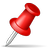
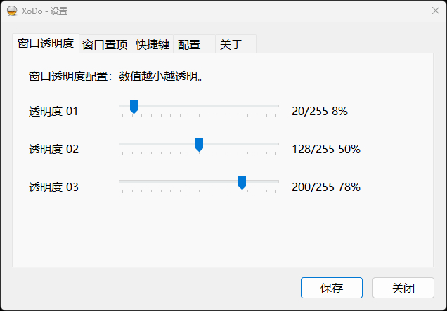
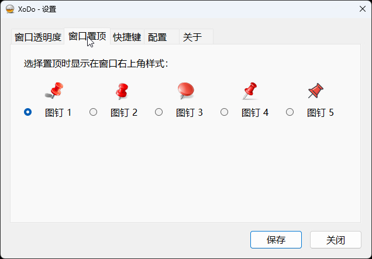
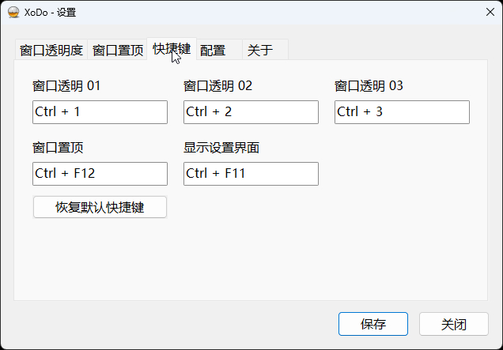
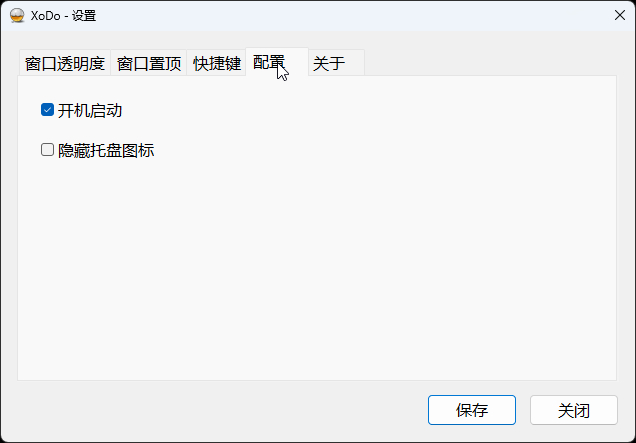

Windows Tray Utility · Win32 Native
让任意窗口
透明可控，一钉置顶。
Transparency · Topmost · Pushpin
XoDo 常驻系统托盘，用一组全局快捷键为当前前台窗口切换三档透明度、切换置顶状态，并在标题栏钉上一枚图钉作为标记。C++17 + Win32 原生实现，单文件、免安装、零依赖。
1 个 EXE · 免安装
Win32 / C++17 · 0 第三方依赖
Windows 10 1607+ / 11
托盘常驻 · 开机自启可选
背景窗口 · 未受管理
目标窗口 · 前台应用
alpha 255/255 · 不透明度 100% · 未置顶
01 / FEATURES
功能概览
围绕“当前前台窗口”的轻量操作集：不注入、不挂钩，只做分层窗口属性与置顶标记。
F-01
α三档窗口透明度
三组可自定义的 alpha 预设（1–255），数值越小越透明；界面百分比为 alpha / 255 的不透明度比例。再次按下当前档位即恢复窗口原始分层状态，换档时始终保留最初状态。
透明度 0120/255 · 8%
透明度 02128/255 · 50%
透明度 03200/255 · 78%
F-02
❖置顶切换与五种图钉
置顶前记录窗口原有置顶状态，取消时如实还原；图钉浮层透明、不激活、鼠标穿透，跟随窗口移动、缩放与 DPI 变化，最小化时自动隐藏。

F-03
⌨全局快捷键，逐项可改
- Ctrl+1窗口透明度 01
- Ctrl+2窗口透明度 02
- Ctrl+3窗口透明度 03
- Ctrl+F12窗口置顶切换
- Ctrl+F11显示设置界面
五项独立配置、支持留空禁用；保存时校验重复并试注册，冲突则保留原配置。
F-04
⚙托盘与开机自启
双击托盘打开设置，右键提供开机自启、设置与退出；自启写入当前用户注册表 Run 项，不安装服务。
F-05
①单实例运行
同一会话重复启动不会叠加进程，而是唤起已有实例的设置窗口后自行退出。
F-06
↺退出即清理
正常退出时恢复被修改的透明度与置顶状态、移除图钉并释放热键与托盘资源。
02 / GUIDE
使用介绍
设置界面为中文原生 Windows 控件，共五个页签；以下截图取自 v1.0 实际界面。

三组滑块 = 三档快捷键
- 滑块取值 1–255，数值越小越透明；右侧同时显示 alpha 与不透明度百分比。
- 对前台窗口按下对应快捷键即应用该档；再按一次同一档恢复窗口原始状态。
- 拖动滑块只更新显示，点击“保存”后才写入配置并同步已记录窗口。
- 桌面、任务栏、最小化及 XoDo 自身窗口会被自动排除。

选一枚喜欢的图钉
- 五种图钉样式任选，置顶后显示在目标窗口标题栏右上角。
- 图钉跟随窗口移动、缩放与 DPI 变化；窗口最小化或隐藏时暂时隐藏标记。
- 图钉是鼠标穿透的提示浮层，不是可点击按钮；再次按 Ctrl+F12 取消管理。
- 原本已置顶的窗口取消后仍保持其自身置顶，仅移除 XoDo 的图钉与记录。

点输入框，直接按组合键
- 五项功能独立配置：三档透明度、窗口置顶、显示设置界面。
- 清空输入框即禁用该功能；“恢复默认快捷键”仅重置输入框，仍需保存生效。
- 保存时检查五项内部重复并尝试系统注册，失败则拒绝候选配置、保留原快捷键。
- 设置窗口处于前台时全局快捷键暂时注销，避免录键误触；测试前请先切回目标应用。

开机启动与托盘可见性
- 开机启动：写入当前用户注册表 Run 项，不安装服务、不请求管理员权限。
- 隐藏托盘图标：仅隐藏 XoDo 自身；且只有在“显示设置界面”快捷键可用时才允许勾选，保证始终留有设置入口。
- 配置保存于 %APPDATA%\XoDo\settings.ini，窗口状态仅存内存、不随重启恢复。
01
下载并运行
双击 XoDo.exe 即常驻托盘，不会弹出主窗口；按 Ctrl+F11 或双击托盘图标打开设置。
02
点选目标窗口
单击需要操作的应用窗口使其成为前台窗口（操作对象是前台根窗口，不是鼠标悬停窗口）。
03
按快捷键生效
Ctrl+2 体验约 50% 不透明度，再按一次恢复；Ctrl+F12 钉上图钉并置顶。
Download · Release
拿走这一个 EXE，就够了。
无需安装器、无需运行时、无需管理员权限。下载后直接运行，图标会出现在系统托盘与折叠图标区域。
直链：github.com/roy-hwoo/XoDo/releases/download/XoDo_1.0/XoDo.exe
或从源码构建（CMake + MSVC）
cmake -S . -B build -G "Visual Studio 17 2022" -A x64 cmake --build build --config Release Start-Process -FilePath ".\build\Release\XoDo.exe"
- File
- XoDo.exe
- Version
- v1.0（XoDo_1.0）
- Arch
- x64
- System
- Windows 10 1607+ / Windows 11
- Install
- 免安装，双击运行
- Runtime
- 静态运行库 /MT，无额外依赖
- Config
%APPDATA%\XoDo\settings.ini
03 / FAQ
常见问题
启动后没有窗口，是不是没运行？
这是正常行为。XoDo 启动后常驻系统托盘，请查看托盘及折叠图标区域；按
Ctrl+F11、双击托盘图标，或再次双击 EXE 均可唤起设置窗口。快捷键没有效果？
操作对象是前台普通应用的根窗口：桌面、任务栏、最小化/不可见窗口及 XoDo 自身窗口会被排除。请单击目标窗口后再按键；若仍无效，在设置中确认快捷键是否为空、是否与其他工具冲突。
配置保存在哪里？重启后窗口状态会保留吗？
预设与选项保存在
%APPDATA%\XoDo\settings.ini。目标窗口句柄、原始透明度与置顶记录仅保存在进程内存中，重启后不会重新应用到这些窗口。强制结束程序后，窗口状态没有恢复？
任务管理器强制结束、崩溃等情形不会执行正常清理。可用目标应用自身的设置恢复透明度/置顶，必要时在保存工作后关闭并重新打开目标应用。